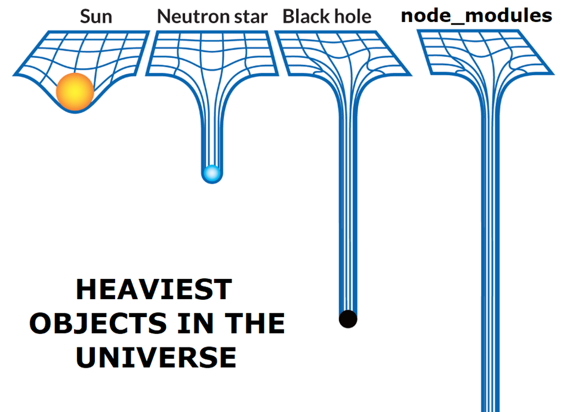
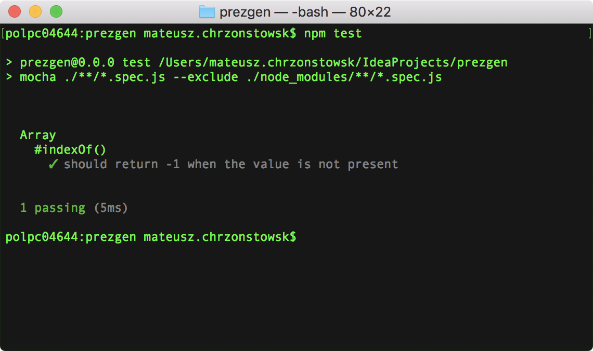
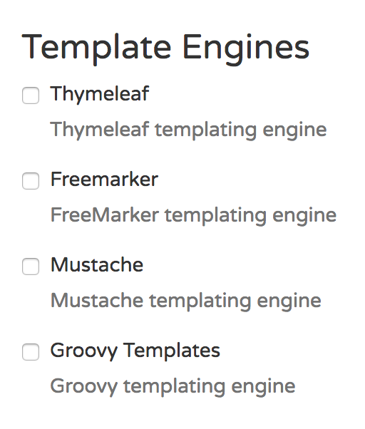
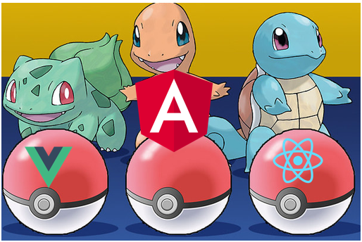

Front-end
dla back-endowców (Java)

Warsztaty
- Narzędzia
- Język
- Stylowanie
- Frameworki
Warsztaty
- Narzędzia
- Node, npm
- ESLint
- Modularyzacja
- Testy jednostkowe
- Język
- Stylowanie
- Frameworki

- Środowisko uruchomieniowe JavaScriptu; taki JVM
- Server-side JavaScript
- Umożliwia dostęp do plików na dysku itd.
- Jak?
- Silnik interpretujący JS, wyjęty z Chrome'a (V8)
- Asynchronous, event-driven, inne fajne słowa*
- *w sumie w JS-ie nie można inaczej niż asynchronous, event-driven (~jednowątkowość)

- Node Package Manager
- Zarządca pakietów, instalowany razem z Nodem
- Największe na świecie repozytorium bibliotek
- Semantic versioning
- Taki Maven/Gradle + Maven Central
- package.json ~ taki pom.xml
- Tylko Maven Central wymaga sprawdzenia, jakiś ticket na JIRA-rze itd.
- A NPM? No cóż...
No cóż... ciąg dalszy

Inne problemy
Ćwiczenie 1
- Ściągnąć i zainstalować Node'a
- nodejs.org lub
brew install node
- nodejs.org lub
-
Przy pomocy poleceń
node -voraznpm -v, upewnić się, że obie rzeczy zostały zainstalowane - Rozpocząć nowy projekt przy pomocy
npm init- Wybrać domyślne opcje, całość nazwać fe-workshop
- Otworzyć wszystko w IntelliJ, przyjrzeć się plikowi package.json
- Spróbować odpalić polecenie test
Warsztaty
- Narzędzia
- Node, npm
- ESLint
- Modularyzacja
- Testy jednostkowe
- Język
- Stylowanie
- Frameworki

- Taki Checkstyle z Javy
- Zautomatyzowana statyczna analiza kodu
- Analiza google'owego style guide
module.exports = {
"extends": "eslint:recommended",
"rules": {
// enable additional rules
"indent": ["error", 4], // warn
"linebreak-style": ["error", "unix"],
// override default options for rules from base configurations
"no-cond-assign": ["error", "always"],
// disable rules from base configurations
"no-console": "off",
}
}
Oficjalny tutorial
Ćwiczenie 2 (1/2)
- Zamiast
npm install eslint --save-dev, wystarczynpm i eslint -D- UWAGA: na razie olewamy opcję
-D
- UWAGA: na razie olewamy opcję
- Jak aktualnie wygląda package.json? Co pojawiło się w node_modules?
- Wykorzystać pobranego ESLinta:
./node_modules/.bin/eslint --init - Zaaplikować reguły, zgodne z popularnym standardem od
airbnb
- Brak Reacta, plik JSON
- Pójść za sugestiami narzędzia inicjalizującego
Ćwiczenie 2 (2/2)
- Przejrzeć package.json i node_modules. Gdzie trafił ESLint? Gdzie jego plik konfiguracyjny?
- Upewnić się, że ESLint jest włączony w IntelliJ (Preferences, ESLint)
-
Utworzyć user.js (zgodny z aktualnymi regułami):
const user = { avatar_url: 'https://picsum.photos/300', bio: 'Test bio', }; - Skonfigurować ESLinta (reguła
comma-dangle), żeby zgłaszał "Unexpected trailing comma" wewnątrz user.js
Warsztaty
- Narzędzia
- Node, npm
- ESLint
- Modularyzacja
- Testy jednostkowe
- Język
- Stylowanie
- Frameworki
Modularyzacja
-
<script src="">no more - Podział aplikacji JS na mniejsze, reużywalne kawałki
- "Moduł" z node_modules to jedno
- Moduł w stylu Node'a to drugie
- Moduł w stylu ES6 - trzecie
- Moduły z node_modules = biblioteki/frameworki, mogące się składać z wielu modułów Node'a lub ES6 (~dociągnięte zależności mavenowe)
Unpkg
- unpkg.com
- "Odwrotność" npm, CDN
- Dobre do prototypowania, podpięcia jakiejś biblioteki "na próbę"
<script src="unpkg.com/:package@:version/:file">
Moduły - node
- Node.js (jako środowisko uruchomieniowe) umożliwiło nowe instrukcje
module.exports= możliwość podania rzeczy dostępnych "na zewnątrz" plikurequire= odwołanie się do rzeczy z innego pliku- Wszystko, czego potrzebujemy, jeśli mamy backend w Node.js
Przykład
// constants.js const ENG = 'Hello'; const PL = 'Siemanko'; module.exports = { eng: ENG, pl: PL }// index.js const greetings = require('./constants.js'); console.log(greetings.pl);
Ćwiczenie 3
- Wyeksportować obiekt z pliku user.js
- Utworzyć index.js i zaimportować do niego user.js
- Zalogować w konsoli (instrukcja
console.log) tekst przypisany do polaavatar_url - W package.json zdefiniować skrypt
startjakonode index.js - Uruchomić program komendą
npm start
Moduły - es6
- JavaScriptowe podejście do modularyzacji
export= wystawianie funkcji/obiektów- Często umieszczane wprost przy deklaracji, np.
export class Test {/*...*/} - Jedna rzecz na plik może być wyeksportowana domyślnie
- Często umieszczane wprost przy deklaracji, np.
import= wciągnięcie- Wymaga podania nazw importowanych rzeczy (w nawiasach klamrowych)
- Import domyślnego eksportu = podanie dowolnej nazwy, brak nawiasów klamrowych
Ćwiczenie 4
-
Podmienić
module.exportsorazrequirenaexportorazimport - Uruchomić program. Co się dzieje?

- Static module bundler
- Pozwala połączyć różne pliki JS, CSS, obrazkowe w jeden/kilka plików wynikowych
- Idealny do zmiany plików JS, używających importów i exportów w 1 plik
- Taki Maven Assembly Plugin
- #0CJS
Ćwiczenie 5
-
Instrukcją
npm i -D webpack webpack-clipobrać webpacka i jego Command Line Interface- Zobaczyć jak zmienił się package.json
- Zdefiniować skrypt npm
"build": "webpack"i odpalić go poleceniemnpm run build - Zwrócić uwagę na błąd i na ostrzeżenie
- Przenieść pliki JS do nowego folderu - src
- Do budowania dodać opcję
--mode production - Odpalić budowanie. Co powstało? Jak wygląda?
- Porównać z
--mode development - Uruchomić aplikację:
node dist/main.js
Siła webpacka - pluginy
- Webpack sam z siebie "ogarnia" javascripty
- Analizuje importy/exporty i tworzy odpowiedni plik wynikowy
- Jednak już "tryb produkcji" robi coś ponad to - minifikacja, maglowanie itp.
- Webpack "pod spodem" używa pluginów
- Ogarnianie HTML-i? CSS-ów? Kolejne pluginy!
Dociąganie pluginów
- Znalezienie odpowiedniego plugina
- Często po prostu szukajka na webpack.js.org
npm i -D znaleziony_plugin- Dodanie plugina do konfiguracji webpacka
- A co z #0CJS?

- A co z #0CJS?
webpack.config.js
const CleanWebpackPlugin = require('clean-webpack-plugin');
const HtmlWebpackPlugin = require('html-webpack-plugin');
const path = require('path');
module.exports = {
mode: 'production',
plugins: [
new CleanWebpackPlugin(['dist']),
new HtmlWebpackPlugin({
template: 'src/index.html'
})
],
module: {
rules: [{
test: /\.css$/,
use: ['style-loader', 'css-loader?modules']
}]
},
optimization: {
runtimeChunk: 'single',
splitChunks: {
cacheGroups: {
vendor: {
test: /node_modules/,
name: 'vendors',
chunks: 'all'
}
}
}
}
};
Konfiguracja
- Webpack domyślnie szuka pliku "webpack.config.js"
- Uruchamiając, można podać ścieżkę do konfiguracji
-
Np.
webpack --config webpack.test.js
-
Np.
- Dobrym pomysłem jest tworzenie konfiguracji dla deva, testa i proda
Ćwiczenie 6
- W index.js podmienić
console.lognaalert - Utworzyć plik index.html w folderze głównym
- Fajnie by było mieć coś, co automagicznie połączy HTML-a z JS-em, nie?
HtmlWebpackPlugin! - Utworzyć plik konfiguracyjny webpack.config.js
- Dociągnąć
clean-webpack-pluginorazhtml-webpack-plugin- Użyć ich w pliku konfiguracyjnym
- Zaktualizować skrypt
npm buildi go odpalić - Otworzyć plik dist/index.html w przeglądarce
Ćwiczenie 7
- Podmienić
alertz powrotem naconsole.log - Co po odświeżeniu pliku dist/index.html w przeglądarce?
-
Pobrać
webpack-dev-server- lokalny serwer webpacka (taki Jetty) - Nadpisać skrypt "start":
webpack-dev-server --mode development --open - Uruchomić aplikację, spojrzeć w konsolę przeglądarki, zostawić
- W pliku user.js zmienić adres na https://placekitten.com/300/300. Co się stało?
Warsztaty
- Narzędzia
- Node, npm
- ESLint
- Modularyzacja
- Testy jednostkowe
- Język
- Stylowanie
- Frameworki
Testy?
- Tak, są :)
- Więcej klocków do złożenia niż w Javie
- Test runner - coś na Node'a
- "Konsolowa" przeglądarka - coś do testów e2e
- Framework do pisania testów - ramy na test case'y
- Biblioteka do asercji - nie zawsze wbudowana
- Mockowanie (spy) - nie zawsze wbudowane
- Różne rozwiązania oferują różne rzeczy z powyższych
Mocha
- mochajs.org
- W praktyce najpopularniejsze rozwiązanie
- Pozostałe opcje
- Runner + framework
- Brak wsparcia do asercji
- Popularna opcja: Chai
- Brak wsparcia do szpiegowania
- Popularna opcja: Sinon
Przykład
const assert = require('assert'); // assert from Node
describe('Array', () => {
describe('#indexOf()', () => {
it('should return -1 when the value is not present', () => {
// given
const arr = [1, 2, 3];
// when
const result = arr.indexOf(100);
// then
assert.equal(result, -1);
});
});
});
Wykonanie
Ćwiczenie 8
- Dociągnąć Mocha'ę,
mocha-webpack(wersja2.0.0-beta.0) orazwebpack-node-externals - Utworzyć webpack.test.js:
module.exports = { target: 'node', externals: [require('webpack-node-externals')()], mode: 'development' }; - Ustawić skrypt testowania aplikacji na
mocha-webpack --webpack-config webpack.test.js \"src/**/*.spec.js\" - Utworzyć moduł map.js z zawartością
export const map = () => {}; - Napisać failujący test map.spec.js: obiekt jak w user.js przekazany do
zaimportowanej
funkcji
mapi asercjaassert.deepEqual(result, { img: givenUrl, bio: givenBio }); - Bonus: dociągnąć i użyć Chaia do asercji

Warsztaty
- Narzędzia
- Język
- Stylowanie
- Frameworki
Warsztaty
- Narzędzia
- Język
- ES6+
- TypeScript
- Stylowanie
- Frameworki
Wstęp
ES6
- A.k.a. ES2015 (weszło w 2015 roku)
- Ogrmony skok JS-a, 4 lata od ES5.1
- klasy, generatory, moduły, lambdy,
Promise, - domyślne parametry, spread, destrukturyzacja,
- nowe deklarowanie zmiennych,
Map,Set, - ...
- klasy, generatory, moduły, lambdy,
- Taka Java 8, może nawet 8 + 9 jednocześnie
- ES6 + Node.js = rewolucja JS
ES6+/ES.Next
- Lepsza nowa (mała) wersja co roku niż wielki wybuch raz na jakiś czas
- Brzmi znajomo, Java 9+?
- Raczej ES2016, ES2017 itd. niż ES7, ES8
- ES2016:
Array.includes,** - ES2017:
async/await - ES2018:
for-await-of, więcejspread - caniuse.com
Destrukturyzacja (destructuring)
destructuring
let a = 1; let b = 2; // magic[a, b] = [b, a];alert(a === 2 && b === 1);
destrukturyzacja
const [a, b, c] = [1, 2, 3, 4, 5];const arr = [1, 2, 3, 4, 5]; let spreadArr = []; [a,,b, ...spreadArr] = arr;alert(b);alert(spreadArr);
destrukturyzacja
const book = {
name: 'Wiedźmin',
author: 'Sapkowski'
};
const city = {
name: 'Lublin',
country: 'Poland'
}
introduce(book);
introduce(city);
function introduce(obj) {
if(obj && obj.name) {
alert(`To jest ${obj.name} i jest bardzo fajny.`);
}
}
null vs. undefined
Bonus
alert([...'👨👩👧👦']);
Ćwiczenie 9
- Zaimplementować
map, żeby test przechodził - Użyć destrukturyzacji bezpośrednio na parametrze wejściowym funkcji
- Nadać nowe nazwy destrukturyzowanym polom
- Wyszukać czym jest shorthand property i wykorzystać w połączeniu z nowymi nazwami
- Zdefiniować domyślne wartości w funkcji
Deklarowanie zmiennych
var,
const,
let
alert(test);
if(true) {
var test = 'foo';
}
alert(test);
var,
const,
let
var arr = [1, 2, 3, 4];
for (var i = 0; i < arr.length; ++i) {
setTimeout(function() {
alert(i + ': ' + arr[i]);
}, (i+1) * 1000);
}
Reguła kciuka
"Na start" zawsze
const, let - w razie potrzeby.Zapomnieć, że istnieje
var."this", klasy
50 shades of this
function testThis() {
alert(this);
return {
testThisInternal() {
alert(this);
}
}
}
testThis();
Class
function Person(name, surname) {
this.name = name;
this.surname = surname;
}
Person.from = function (fullName) {
return new Person(...fullName.split(' '));
}
Person.prototype.sayHello = function () {
alert(`Hi, I'm ${this.fullName}!`);
}
Object.defineProperty(Person.prototype, 'fullName', {
get() {
return `${this.name} ${this.surname}`;
}
});
Person.from('Adam Małysz').sayHello();
class Person {
static from(fullName) {
return new Person(...fullName.split(' '));
}
constructor(name, surname) {
this.name = name;
this.surname = surname;
}
sayHello() {
alert(`Hi, I'm ${this.fullName}!`);
}
get fullName() {
return `${this.name} ${this.surname}`;
}
}
Person.from('Adam Małysz').sayHello();
Ćwiczenie 10
- Przerobić funkcję
mapna konstruktor klasyGitHubUser- Zmienić nazwę modułu na model.js
- W konstruktorze ustawić pola
imgorazbio - Dodać metodę
toString, zwracająca biografię
- Poprawić istniejące testy i dorobić test dla
toString(np. zawołać w asercji'' + resultalbo jeszcze lepiej -`${result}`) - Bonus: ukryć pola w zmiennych i wystawić gettery (np.
get name() { return _name; })
Dziedziczenie

class Figure {
constructor(sidesNum) { this.sidesNum = sidesNum; }
alertSides() { alert(`Liczba boków: ${this.sidesNum}`); }
calculateArea() { return NaN; }
}
class Rectangle extends Figure {
constructor(a, b) {
super(4);
this.a = a;
this.b = b;
}
calculateArea() { return this.a * this.b; }
}
class Square extends Rectangle {
constructor(a) { super(a, a); }
}
const rect = new Rectangle(2, 4);
rect.alertSides();
alert(`Pole prostokąta: ${rect.calculateArea()}`);
alert(rect instanceof Figure);
alert(rect instanceof Object);
alert(rect instanceof Square);
Kompozycja (mixin)
const FlyMixin = (superclass) => class extends superclass { fly() { alert('flying!'); } };class Mammal { /* mammal stuff */ } class Dog extends Mammal{} class Bat extends FlyMixin(Mammal) {}new Bat().fly(); console.log(Bat);
Ćwiczenie 11
- Przenieść model.js i testy do folderu src/github
- Przenieść user.js do src/about-me i utworzyć tam pliki component.js oraz index.js
-
W component.js stworzyć klasę
AboutMe, rozszerzającąHTMLElement(znany przeglądarkom)- Zawołać konstruktor klasy bazowej
- Zaimportować user.js i dodać w konstruktorze:
this.innerHTML = `${user.bio}
`;
-
W about-me/index.js dodać funkcję (i zaimportować ją i zawołać w głównym index.js):
export default () => customElements.define('about-me', AboutMe); - W index.html dodać:
<main> <about-me></about-me> </main>
DOM
Demo 1
const span = document.querySelector('#demoHeader1'); span.classList.add('highlight-2');const div = document.createElement('div'); div.classList.add('highlight-1'); div.innerText = 'dynamiczny div'; span.parentElement.after(div);const div2 = document.createElement('div'); div2.innerHTML = ` dynamiczny span w divie `; span.parentElement.after(div2);
API: fetch
fetch
console.log( fetch('https://geocode.xyz', { method: 'POST', headers: { 'Content-Type': 'application/x-www-form-urlencoded', }, body: new URLSearchParams({ geoit: 'JSON', locate: '52.21667,21.03333' }) }).then(response => response.json()));
- Klient HTTP, nowe API przeglądarek do odpytywania
- Działa z
Promise
API: Promise
Promise
- Taki
CompletableFuturez Javy - Następstwo callbacków
- Podejście stosowane od dłuższego czasu w bibliotekach, od ES6 natywnie w JS-ie
- MDN web docs
Przykład
Promise.all([
Promise.resolve(3),
new Promise((resolve, reject) => {
alert('action!');
resolve(4);
}),
new Promise((resolve, reject) => {
setTimeout(resolve, 100, '555');
})
]).then(r => alert(r));

fetch + Promise
fetch('https://geocode.xyz', {
method: 'POST',
headers: {
'Content-Type': 'application/x-www-form-urlencoded',
},
body: new URLSearchParams({
geoit: 'JSON',
locate: '52.21667,21.03333'
})
})
.then((response) => {
if(!response.ok) {
throw new Error('Response status not 200');
}
return response.json();
})
.then(obj => console.log(obj))
// just for the demo purposes
.catch(err => console.warn(err));
async, await
async, await
console.log(getGeo());
async function getGeo() {
const response = await fetch('https://geocode.xyz', {
method: 'POST',
headers: {
'Content-Type': 'application/x-www-form-urlencoded',
},
body: new URLSearchParams({
geoit: 'JSON',
locate: '52.21667,21.03333'
})
});
if(!response.ok) {
throw new Error('Response status not 200');
}
return await response.json();
}
Ćwiczenie 12
- Utworzyć service.js w src/github
- Napisać funkcję, zwracającą
GitHubUserz https://api.github.com/users/${nazwa} - Pamiętać o obsłudze błędów
- Napisać funkcję, zwracającą
- Zmodyfikować
AboutMe- Dodać asynchroniczną metodę
render, która wykorzysta funkcję z src/github/service.js - Wykorzystać
observedAttributesorazattributeChangedCallback, żeby pobierać atrybut i odpalaćrendertylko na jego zmiany
- Dodać asynchroniczną metodę
- Dodać atrybut w miejscu wykorzystania elementu
about-me
kolekcje
Obiekty jako mapy
const objMap = {
'foo': 123,
bar: 'abc',
baz: null
};
for(const key in objMap) {
alert(`${key}: ${objMap[key]}`);
}
alert(objMap['bar']);
alert(objMap.foo);
- Kluczami są zawsze stringi (ewetnualnie symbole)
- Kolejność kluczy pod znakiem zapytania
- Brak łatwego dostępu do rozmiaru "mapy"
objMap is not iterable- Uwaga na prototyp!
Mapy ES6
const realMap = new Map([
[1, 'abc'],
['foo', 'xyz']
]);
realMap.set('bar', null);
alert(realMap.size);
alert(realMap.has('bar'));
for(const [key, val] of realMap) {
alert(`${key}: ${val}`);
}
realMap.forEach((val, key) => alert(`${key}: ${val}`));
- Kluczami mogą być funkcje, obiekty, typy proste
- Podczas iterowania kolejność jak przy wstawianiu
- Pole
size, mapy to iterable - Zoptymalizowane do wstawiania i usuwania par
Zbiór
const arr = [1, 2, 'foo', null, 2, null];
alert(arr.length);
const set = new Set(arr);
alert(set.size);
set.add(1).add(7).add('bar');
alert(set.size);
set.forEach(val => alert(val));
- Unikalne wartości
- Kolejność iterowania jak przy wstawianiu
- API spójne z mapami (np.
entries,keys)
Porównywanie obiektów
alert(1 == '1'); alert(1 === '1');const obj = { test: 'passed' } const set = new Set([{}, 'foo', obj]);alert(set.has(obj)); alert(set.has({}));
- Brak metod jak
equalslubhashCode - shallow
Przetwarzanie
const result = [
1, 2, 'foo', null, 5, null, 0.99
].filter(Number.isInteger) // e => Number.isInteger(e)
.map(e => e ** 2)
.reverse()
.reduce((acc, cur) => acc + cur, 0);
alert(result);
- Na tablicach
- A np.
Set?new Set([...set1].filter(x => set2.has(x))) - Uwaga!
push,splicei innepopy mutują tablicę, zamiast zwracać nową!
Warsztaty
- Narzędzia
- Język
- ES6+
- TypeScript
- Stylowanie
- Frameworki

- Język będący nadzbiorem JavaScripta
- Taki Groovy, tylko Groovy dodaje Javie dynamiczne typowanie
- TypeScript dodaje statyczne typowanie JS-owi :)
- Oprócz typów i featureów z nimi związanych, TS dodaje instrukcje z
przyszłych standardów ES
- Przykładowo dekoratory
- TS to również zbiór definicji (typowań) większości znanych bibliotek
- Nowoczesne IDE korzystają z tych definicji
- Kompilowanie TS-a do JS-a wychwytuje sporo błędów (JS - dopiero w przeglądarce)
Pierwsze kroki
npm i -D typescript- Podmiana rozszerzenia pliku z .js na .ts
- TypeScript już działa!
- Naniesienie poprawek, sugerowanych przez IDE
- Ręczna kompilacja pliku:
node_modules/typescript/bin/tsc ./plik.ts - Możliwa też kompilacja przy pomocy IDE
- Docelowo? Skrypt npm lub loader webpacka
Ćwiczenie 13
- Zainstalować TS jako zależność deweloperską
- Zmienić src/github/model.js na TS!
- Nanieść zasugerowane poprawki; na razie wersja "light" TypeScripta
- Czytelniej, prawda? :)
- Usunąć ignorowanie ESLinta. Czy ESLint działa?
- Spróbować uruchomić aplikację
- Skompilować np. z terminala w src/github:
../../node_modules/typescript/bin/tsc ./model.ts - Co jest nie tak z plikiem wynikowym?
Ćwiczenie 14: ESLint!
- Doinstalować
typescript-eslint-parserorazeslint-plugin-tslint - Do konfiguracji ESLinta dodać opcje
"parser"oraz"plugin", wskazujące powyższe zależności- Upewnić się o wszystkim w dokumentacji plugina
- Dodać też
"parserOptions"i wskazać ES2018 - Dostosować reguły i formatowanie plików TS do swoich potrzeb
- Bonus: poczytać o TSLint
Ćwiczenie 15: wynikowy ES6+
- Dla odmiany - JSON :)
- W głównej ścieżce utworzyć tsconfig.json
- Ustawić opcje
"module"oraz"target"na"esnext"- Co ciekawe, możemy ustawić nawet ES3 (sic!)
- Ustawić
"alwaysStrict" - Ignorować node_modules
- Dodać
"src/**/*"w"include" - Odpalić
tscw folderze głównym
Ćwiczenie 16: webpack
- Dociągnąć
awesome-typescript-loaderjako zależność developerską - Zmodyfikować obie konfiguracje webpacka, w oparciu o dokumentację loadera
- Usunąć plik model.js i odpalić testy. Czy działają?
- Sprawdzić też instrukcje start oraz build
Deklarowanie
- Składnia "kotlinowa":
let zmienna: typ - Zmienna raz zdefiniowana jako
stringnie może przyjąć niczego innego - Wyjątek? Typ
any - Działa type inference
- Jeśli tylko zadeklarujemy zmienną (nie podamy wartości), dostaniemy typ
any - Demo time!
- Odpalić przykłady 1 i 2 i zobaczyć, o czym tu mowa :)
Interfejsy
- Informacja o typach, wyłącznie w TypeScript'cie
- Zupełnie ignorowane w kodzie wynikowym
- Pomocne dla IDE i dla programistów :)
- Współpracują z
importami iexportami - Zalecenia TS: nazwę rozpoczynać od
I - Ciekawostka: mogą zawierać nie tylko metody, ale i pola, wymagające
"implementacji"
- Dużo sensu w przypadku istniejących bibliotek
- Pomocne w getterach i setterach
- Duck typing się kłania
- Pozostałe kwestie - podobnie jak w Javie 7
- Zobaczyć w przykładzie 3
Dodatki
-
Tak jak
interfaceistnieje tylko w TS, tak też-
[key: string]: any- oznaczenie, że w obiekcie będą "dynamiczne" składowe pole?- pole niewymagane (opcjonalna implementacja, ale typy muszą się zgadzać!)-
readonly- pole tylko do odczytu (jakconstdla zmiennych lokalnych) private,public- różny dostęp do składowych- Można jak w Kotlinie - definiować dostępy od razu w konstruktorze
-
- Zobaczyć przykłady 4 i 5
Ćwiczenie 17
- W module github/model.ts, dodać interfejs, reprezentujący odpowiedź z API
GitHuba
- Wyeksportować go
- Usunąć nieaktualne obejście reguł ESLinta
- Przerobić test na plik TS i użyć tam interfejsu
- Pójść za sugestiami i zainstalować
@types/nodeoraz@types/mocha - Odpalić testy
- Usunąć nieużywany plik about-me/user.js
Typowanie
@typesto zarezerwowana grupa pakietów npm@somescope/somepackagename= scoped package
- Dodawane są tam definicje typów dla istniejących, nie-TS-owych bibliotek
- TypeScript rozpoznaje dociągnięte @types
- Dla istniejących źródeł .ts, wygenerowanie to ustawienie w tsconfig flagi
"declaration": true- Powstają pliki .d.ts (jak declaration)
- W repo powinniśmy trzymać tylko pliki .ts, a np. do npm wrzucać wygenerowane .js oraz .d.ts
- TypeScript zna też typy dla rzeczy istniejących w JS-ie
Ćwiczenie 18
- Zamienić pozostałe pliki na TypeScripta
- Dodać
"declaration"żeby budowanie tworzyło pliki .d.ts - Poczytać jak działa opcja tsconfiga -
"lib" - Pousuwać nieaktualne eslintowe komentarze
- Ciekawostka: używając odpowiednich opcji, moglibyśmy działać TypeScriptem na plikach .js
Zaawansowane typowanie
Generyki
- Ciekawy przykład z definicji DOM:
querySelector<K extends keyof HTMLElementTagNameMap>(selectors: K): HTMLElementTagNameMap[K] | null; - Odpalenie
querySelectora np. z argumentem'h1'zwróciHTMLHeadingElement - Informacja o typach jest oczywiście wymazywana
- Ciekawostka - mapped types
type Readonly<T> = { readonly [P in keyof T]: T[P] };- Istnieją już predefiniowane opcje
- Rzucić okiem na przykłady 6 i 7
Unie
- Możliwe przypisanie jednego z wielu typów
- Specyficzne przypadki:
type | nulltype | undefined
- Tak jak w Kotlinie - upewnienie się o typie, udostępnia wszystkie jego metody
- Można pisać własne "upewniacze"
- Przykłady 8 i 9
Jeszcze więcej, jeszcze mocniej
Warsztaty
- Narzędzia
- Język
- Stylowanie
- Frameworki
CSS
- Czasami po prostu trzeba
- CSS też ewoluuje
- Do tego Sass i inne są dla CSS-a czymś, czym TS jest dla JS-a
Reguła kciuka
Znaleźć jakiś styl, który nam odpowiada (gdzieś, na jakiejś stronie) i go
podrąbać.
I poznać flexa.
I środkowanie diva.
Ćwiczenie 19: live
- Wejść na twitter.com i podejrzeć w inspektorze przeglądarki, jak ostylowane są zdjęcia profilowe
- Otworzyć naszą stronę i w inspektorze bawić się ze stylami, dopóki nie uzyskamy efektu twittera
- Poczytać o flexboxie
- Ostylować zdjęcie i biografię
- Oba na środku strony
- Tekst "na środku" obrazka w pionie
- Skopiować style na stałe, może być bezpośrednio do index.html (znacznik
<style>)
A bootstrap?
- Problem jest taki, że go nie lubię
- Narzuca dużo w HTML-u. Styl? Ok, ale tylko, gdy input w divie, w formularzu, w fieldset'cie itd.
- Część bootstrapowych rzeczy wymaga JS-a, w tym jQuery (sic!)
- Warto korzystać z komponentów, np. pod Reacta, które z Bootstrapa biorą tylko styl
- Fajna, prosta i lżejsza alternatywa: Pure.css
Ćwiczenie 20
- Podsumujmy wszystko!
- Przemianować
IGitHubResponsenaIGitHubUserResponse - Dodać
IGitHubRepoResponsename: string,stargazers_count: number,fork: boolean,html_url: string
- Dodać klasę
GitHubRepo- Pola
name,starsorazurltworzone zIGitHubRepoResponse
- Pola
- W github/service dodać metodę pobierającą repozytoria z GitHub
API
- Odfiltrować forki
- Zmapować odpowiedź na tablicę
GitHubRepo
Warsztaty
- Narzędzia
- Język
- Stylowanie
- Frameworki
Warsztaty
- Narzędzia
- Język
- Stylowanie
- Frameworki
- Przegląd
- React
Czy dużo i chaos?
Eksperyment myślowy
Szablony w Javie?
Czyli co?
Czego NIE używać?
- jQuery ⇒ (nowe) DOM API, poważne frameworki
- lodash (50%) ⇒ ES6+
- Grunt, Gulp ⇒ webpack
- Bower ⇒ npm
- AngularJS ⇒ Angular
Warsztaty
- Narzędzia
- Język
- Stylowanie
- Frameworki
- Przegląd
- React

- Stworzona i używana przez Facebooka biblioteka do renderowania widoków
- Promuje jednokierunkowy przepływ danych
- Virtual DOM
- Renderowanie DOM-a jest kosztowne
- Elementy trzymane i wyliczane w pamięci
- Zmiana? Szukanie najmniejszej delty i renderowanie tylko tego
- Deklaratywny - mówimy jak widok ma wyglądać, a nie jak go zrobić
Ćwiczenie 21 (1/2)
- Zainstalować Reacta jako
zależność (nie-dev!)
- Dociągnąć też
react-dom
- Dociągnąć też
- Dociągnąć (dev)
@types/react-domi@types/react - Dodać do tsconfig.json opcje
"jsx": "react"oraz"skipLibCheck": true - Dodać
<section id="repos"></section>na dole index.html - Zmienić index.ts na index.tsx i dodać:
orazReactDOM.render(Hello, world!
, document.getElementById('repos') );import * as React from 'react'; import * as ReactDOM from 'react-dom';
Ćwiczenie 21 (2/2)
- Utworzyć dedykowany webpack.dev.js (można inspirować się oryginalnym)
- Dać
mode: 'development',devtool: 'inline-source-map' - Wywalić opcję
optimization
- Dać
- Uwzględnić zmianę w skrypcie npm start:
webpack-dev-server --config webpack.dev.js --open - Uruchomić aplikację i zweryfikować jej działanie
Komponenty
- Warto skojarzyć je z funkcjami w JS
- Budują UI z reużywalnych kawałków
- Wkładem (~argumentami wejściowymi funkcji) są tzw.
propsy propsy są tylko do odczytu (~pure function)- Komponenty zwracają reactowe elementy, opisujące widok (~Virtual DOM)
- Do ich tworzenia używa się JSX-a:
const element =Hello, world!
;- Ni to
string, ni to HTML - To jest właśnie element, napisany JSX-em
- JSX = rozszerzenie JavaScripta
- Do używania JSX-a potrzebny TypeScript/Babel
- Ni to
JSX - dalej
const element = ( <h1 className="greeting"> Hello, world! </h1> );const element = React.createElement( 'h1', {className: 'greeting'}, 'Hello, world!' );
- Bliżej JS-a niż HTML-a
- Przykładowo definiujemy
className,onClick - Ma to sens, tak łatwiej tworzyć elementy z kodu JS
To może komponencik?
class Welcome extends React.Component {
render() {
return Hello, {this.props.name}
;
}
}
Dla tak prostych, można prościej:
function Welcome(props) {
return Hello, {props.name}
;
}
I dalej (użycie):
ReactDOM.render(
<Welcome name="Zbigniew" />,
document.getElementById('root')
);
- Duża litera = React traktuje to jako funkcję/klasę i przekazuje argumenty
jako
props - No i się jedzie: zagnieżdżenia i przekazywanie
propsów "w dół"
Ćwiczenie 22
- Utworzyć github/react-component.tsx
- Stworzyć "funkcyjny" komponent
RepoTableRow, zwracający wiersz tabeli - Komponent powinien oczekiwać
propsów:name,stars,url- Można używać destrukturyzacji!
- Rezultat dla dodatniej liczby gwiazdek (podejrzeć output w
inspektorze i olać
tableoraz stylowanie):brains 35 ⭐ 🔗 - 0 gwiazdek:
embedded-tomcat - 🔗
Ćwiczenie 23 (1/2)
- Dociągnąć (dev)
enzymeenzyme-adapter-react-16- Ich
@types
- Przygotować common/test-setup.ts:
import * as Enzyme from 'enzyme'; import * as Adapter from 'enzyme-adapter-react-16'; Enzyme.configure({ adapter: new Adapter() }); - Zaktualizować npm test:
mocha-webpack --webpack-config webpack.test.js src/common/test-setup.ts \"src/**/*.spec.ts*\"
Ćwiczenie 23 (2/2)
- Stworzyć i poprawić react-component.spec.tsx:
import * as React from 'react'; import { shallow } from 'enzyme'; import { RepoTableRow } from './react-component'; const assert = require('assert'); describe('<RepoTableRow />', () => { it('creates table cells for name, stars and url', () => { // given const [name, stars, url] = ['repo', 7, 'url']; const props = { name, stars, url }; // when const result = shallow(<RepoTableRow {...props} />); // then assert.ok(result.contains(<td>{name}</td>)); assert.ok(result.contains(<td>{stars} ⭐</td>)); assert.ok(result.contains(<td><a href={url}>🔗</a></td>)); }); it('ignores 0 stars', () => { assert.fail(); }) });
A jak coś zmieniać?
- Stan komponentu -
state! - Łatwe w komponentach-klasach
- Komponenty-funkcje mogą używać stanu od niedawna (i wciąż
nieoficjalnie) -
hooki - Utarł się podział
- Presentation Component - funkcja, lekkie
- Container Component - klasa, "rozdzielacz" stanu
- Komponenty-funkcje mogą używać stanu od niedawna (i wciąż
nieoficjalnie) -
this.stateinicjalizujemy na start (np. w konstruktorze)- Pamiętać: konstruktor (gdy jest) pobiera i przekazuje
propsy dosuper()
- Pamiętać: konstruktor (gdy jest) pobiera i przekazuje
Ogarnianie stanu
- Konstruktor odpowiada za stworzenie "przepisu na renderowanie"
- Czasami chcemy reagować później - dopiero na wyrenderowanie
- Odpowiedź? Lifecycle Methods
componentDidMount- metoda odpalana po osadzeniu DOM-a wyliczonego z komponentucomponentWillUnmount- wymazujemy DOM
- Poprawna zmiana stanu (=> przerenderowanie):
this.setState({comment: 'Hello'});
Tips & tricks
-
Legendarny
this:class LoggingButton extends React.Component { // albo normalnie, a w JSX: (e) => this.handleClick(e) handleClick = () => console.log('this is:', this); render() { return <button onClick={this.handleClick}>Click me</button>; } } -
<ul>{condition && list.map((item, i) => <Comp prop={item} key={i} />)}</ul> propsprzekazany do dziecka to może być funkcja, zmieniająca stan rodzicarenderpowinien zwracać raczej pojedynczy element. Ale można użyć<></>- W TS jest fajne typowanie
React.Component<PropsType, StateType>
Ćwiczenie 24
- W index.html dodać:
<link rel="stylesheet" href="https://unpkg.com/purecss@1.0.0/build/tables-min.css"> - Dodać "funkcyjny" komponent
RepoTable- Tabela z klasami
"pure-table pure-table-bordered" - Oczekiwany
props-repos: IGitHubRepo[] - Dziećmi tabeli powinny być
RepoTableRow, stworzone z kolejnychGitHubRepo
- Tabela z klasami
- Dodać komponent
Repos, dociągający repozytoria wcomponentDidMounti renderującyRepoTable - Wyczyścić znacznik HTML
maini nadać muid="app" - W index.tsx zdefiniować komponent
Apprenderujący w znacznikumainzarównoabout-mejak iRepos-
declare global { namespace JSX { interface IntrinsicElements { 'about-me': { me: string } } } }
-
Gdzie dalej z Reactem?
- Narzędzia deweloperskie do przeglądarek: link
- create-react-app - starter projektów
- react-router
- Redux
Dziękuję
Najpierw cię ignorują. Potem śmieją się z ciebie. Później z tobą walczą. Później
wygrywasz. ~Gandhi
Stan na dziś: poważny, zaawansowany język
Jednocześnie trudniej się wypalić zawodowo, bo od
razu dużo widać na ekranie :)